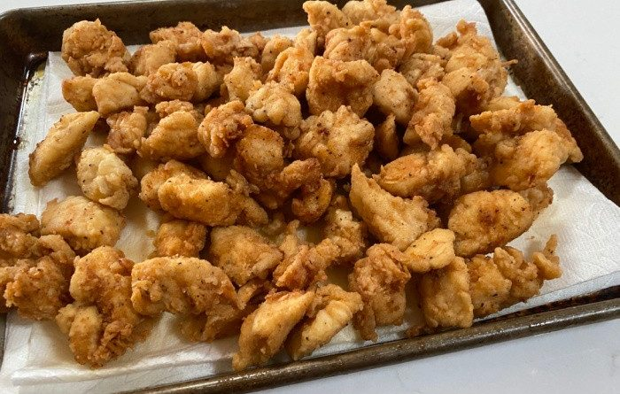

The Best Ever Chicken Nuggets

Description
No doubt these will be the best ever chicken nuggets you and your family will have ever tasted in their whole entire god given lives on this planet ever!
Ingredients
- vegetable oil for frying
- 4 cups all-purpose flour
- 6 tablespoons garlic salt
- 3 tablespoons ground black pepper
- 4 large eggs, beaten
- 8 skinless, boneless, chicken breast halves - cut into small chunks
Steps
- Heat 1 inch oil in a large skillet or saucepan to 350 degrees F (175 degrees C).
- Stir together flour, garlic salt, and pepper in a bowl. Dip chicken pieces into beaten eggs, then press each piece into flour mixture to coat well; shake off excess flour. Place coated chicken pieces onto a plate.
- Working in batches, fry chicken in hot oil until golden brown and no longer pink in the center. An instant-read thermometer inserted into the center should read at least 165 degrees F (74 degrees C).